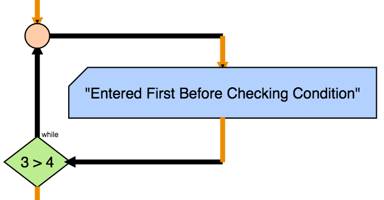

A instrução Faz Enquanto repete qualquer instrução dentro desta enqunto a condição associada for verdadeira.
Difere da instrução Enquanto pois esta efectua a primeira iteração sem validar a condição
FazEnquanto [condição] faz
[instructions]
fim FazEnquanto
